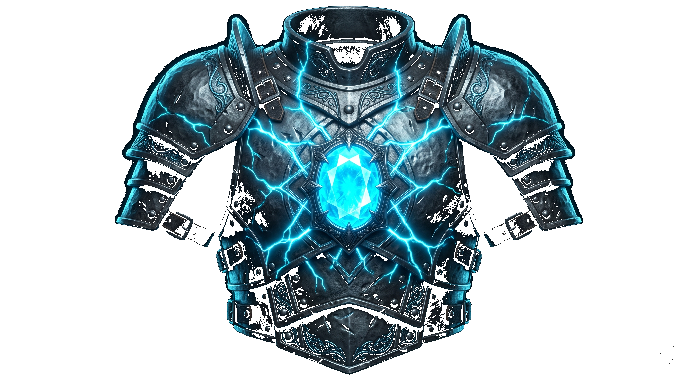

Instant Regeneration
When it gets hit, the armor doesn't just crack. It uses all that stormlite energy to heal the metal instantly, way before it can actually break.
Elhokar Kholin is the king, but he is so paranoid about assassins in the shadows that he can barely focus on ruling. He sees threats everywhere, even when nobody is there. He needs something that actually makes him feel safe, not just more guards.

Instead of a bunch of tiny gems like regular shardplate, this uses one massive stormlite-infused gemstone right in the center. That huge boost of energy changes everything.
When it gets hit, the armor doesn't just crack. It uses all that stormlite energy to heal the metal instantly, way before it can actually break.
An assassin with a normal sword, spear, or knife? Completely deflected. It wouldn't even leave a scratch on the metal.
Even if an assassin somehow had a shardblade, the armor is so thick and strong now that the blade gets stopped on the first hit. The King's Guard would have plenty of time to save him.
The stormlite makes the armor support its own weight, so Elhokar can actually wear it to bed. When he wakes up thinking he sees assassins, he can feel the plate on his body and know he is safe.
"He would be way less paranoid and could finally focus on ruling his kingdom, winning the war, and being the strong leader he is supposed to be."